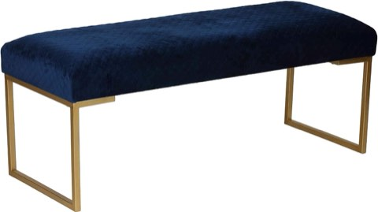

Blue and farmhouse do not sound like they should go together at first.
One feels cool and coastal.
The other feels warm and rustic.
But that tension is exactly why the combination works so well in a bedroom.
Done right, it reads calm, collected, and a little bit storied, without tipping into either a nursery or a beach house.
You do not need to overhaul everything at once to feel the difference.
These ideas work in pieces, whether you are starting from scratch or just want to shift an existing room in this direction.


Cortesi Home Claymore Large Ottoman Bench with Painted Gold Legs, Blue Velvet, 48"
Shop on Amazon1. Get the Lighting Right
Overhead lighting is the fastest way to flatten an otherwise beautiful room, and a blue farmhouse bedroom is no exception.
Warm Edison bulbs in a vintage-style lamp do more atmospheric work than almost anything else on this list.
Matte black or bronze wall sconces add a soft glow at eye level, and a strand of fairy lights tucked into a mason jar is a cliché for a reason.
It works.
A dimmer switch is worth the small investment.
Harsh overhead light undoes every bit of rustic, cozy mood the rest of the room just spent so much effort building.
Candles on the dresser round things out nicely too, even unlit ones add a little warmth just by sitting there.
2. Keep Pattern Small-Scale
Pattern is where a lot of blue farmhouse bedrooms go wrong.
It is easy to tip from charming into busy fast.
Gingham or plaid throws in muted blue stay firmly on the charming side.
Ticking stripe pillow covers are close to a farmhouse requirement at this point.
A floral area rug in soft navy and cream adds pattern underfoot without competing with everything above it.
Nothing needs to match exactly.
Coordinating tones does more work than matching patterns ever will.
3. Add One Unexpected Industrial Note
Farmhouse does not have to mean soft everywhere.
A little industrial edge keeps a blue bedroom from drifting into overly precious territory.
Black metal hardware on dressers, a wire pendant light or iron wall sconces, even a vintage fan or factory-style bench all bring that contrast in without clashing with the rest of the room.
Think of it as the equivalent of pairing boots with a soft dress.
The hard edge makes the soft parts read as more intentional, not less.
4. Commit to One Moody Wall
If you want real drama, give it a single wall instead of spreading it thin across the whole room.
A navy accent wall behind the headboard is the obvious move.
Patterned blue wallpaper with a farmhouse motif, florals, toile, a ticking stripe, works beautifully too, as does blue beadboard or wainscoting for texture without a full saturated color.
Keep everything else in the room quiet so the statement wall can actually read as one.
A room with three competing focal points does not have a focal point at all.
5. Layer In Natural Texture
Natural materials are what keep a blue farmhouse bedroom from tipping into something that feels more coastal-glam than farmhouse-cozy.
Rattan baskets double as storage and styling in one move.
A woven jute rug grounds the floor with texture instead of pattern.
Linen curtains filter light beautifully and soften every hard edge in the room.
These textures do a lot of quiet work.
They are what makes a moody blue room feel lived-in rather than staged.
6. Let Blue Show Up in the Small Stuff
You do not need to commit to blue everywhere at once.
Sprinkling it through smaller pieces ties the room together just as well.
A blue ceramic lamp on the nightstand, a navy velvet ottoman at the foot of the bed, or a piece of art with ocean or sky tones all do the job without overwhelming the space.
The trick is restraint.
Pick two or three tones of blue and repeat those specifically, rather than letting every accent be a slightly different shade.
7. Bring In Something Properly Old
The pieces that make a blue farmhouse bedroom feel collected instead of decorated usually are not new at all.
A wrought iron bed frame with a little visible wear earns its place.
A dresser painted blue with mismatched vintage knobs adds instant character.
A distressed vanity or side table in white or gray rounds out the mix.
Thrift stores and flea markets are the obvious hunting grounds, but plenty of newer furniture fakes the look convincingly if digging through secondhand shops is not your idea of a weekend.
Even one genuinely old piece does more for the room's character than three new ones trying to look old.
8. Keep the Bed Itself Light
A moody palette on the walls is lovely, but the bed should still feel like the softest part of the room, not an extension of the drama.
Stick to crisp white, soft cream, or the palest blue for your main sheets and duvet.
Then build character back in with a chunky navy knit throw folded at the foot, a few vintage floral pillows in muted blues, and linen shams with slightly frayed edges.
That contrast, moody walls, light bed, is what keeps the whole room from feeling heavy.
9. Balance It With Whitewashed or Weathered Wood
This is where the farmhouse half of the equation shows up.
Blue needs something warm and textured to lean against, or it starts to feel flat.
Whitewashed shiplap is the obvious classic, and it still earns its reputation.
A reclaimed wood headboard brings in grain and history.
Distressed oak or pine nightstands round it out without trying too hard.
The more worn-in it looks, the better it works here.
A piece that looks like it is survived a few decades of actual use does more for the room than anything brand new ever could.
10. Choose a Blue That Reads Warm, Not Cold
Not every blue belongs in a farmhouse bedroom.
The ones that work lean soft and a little dusty.
Nothing that reads clinical or crisp.
Slate blue brings quiet sophistication without tipping moody.
Dusty cornflower has that faded, vintage quality, almost like well-worn denim.
Navy with gray undertones goes deep and cozy without losing the farmhouse warmth.
Test your shortlist on the actual wall before committing to the whole room.
A blue that looks perfect on a paint chip can turn shockingly saturated once it is covering four walls in daylight.
It is the Layering That Makes It Work
A blue farmhouse bedroom is not about picking one perfect shade and calling it done.
It is the layering, a moody wall against pale bedding, a worn dresser next to something newly upholstered, natural texture softening every hard edge, that actually makes the look work.
You do not have to tackle the whole room this weekend.
Swap the bedding, add one accent, try a moodier wall if you are feeling brave.
Small changes shift the whole feel faster than you would expect.
Start with whichever idea you keep coming back to, and let the rest of the room catch up around it in its own time.